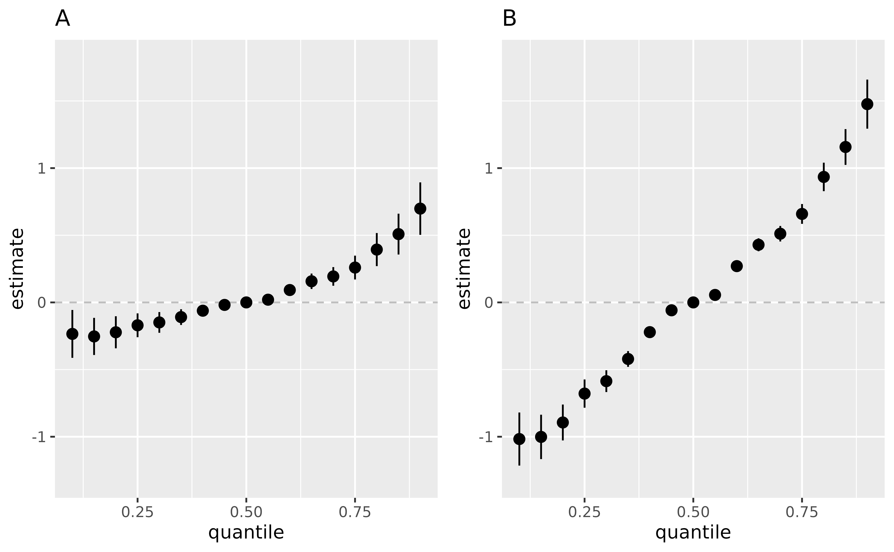

BKMRCMA Effect Of Joint Exposures when the Effect Modifier is Fixed
Source:vignettes/BKMRCMA_Effectof_singleZ.Rmd
BKMRCMA_Effectof_singleZ.RmdIn this scenario, we have a continuous mediator \(M\), a continuous outcome \(Y\), and x2 as the effect
modifier on \(Y\). The sample size is
50 and there are 3 covariates.
We can generate a basic sample dataset analogous to the one presented in the QuickStart guide and proceed to fit the BKMR models in the same way.
astar <- c(apply(A, 2, quantile, probs=0.25))
a <- c(apply(A, 2, quantile, probs=0.75))
e.y10 = quantile(E.Y, probs=0.1)
e.y90 = quantile(E.Y, probs=0.9)
TE.ey10 <- TE.bkmr(a=a, astar=astar, e.y = e.y10, fit.y.TE=fit.y.TE, X.predict=X.predict, alpha=0.05, sel=sel, seed=122)
TE.ey90 <- TE.bkmr(a=a, astar=astar, e.y = e.y90, fit.y.TE=fit.y.TE, X.predict=X.predict, alpha=0.05, sel=sel, seed=122)Joint effect of co-exposure to Z1, Z2 and Z3 and single variable effects, presented when the Effect Modifier is fixed at its 10th percentile or 90th percentile
list.fit.y.TE <- list(fit.y.TE)
colnames(list.fit.y.TE[[1]]$Z) <- c("z1", "z2", "z3", "E.Y")
overallrisks.y.TE.joint.x10 <- OverallRiskSummaries.MI(BKMRfits=list.fit.y.TE, qs = seq(0.1, 0.9, by = 0.05), q.fixed = 0.5, q.alwaysfixed = 0.1, index.alwaysfixed = 4, sel = sel, method="approx")
#> [1] "approx method"
#> [1] "1 out of 17 complete: 0 min run time"
#> [1] "2 out of 17 complete: 0 min run time"
#> [1] "3 out of 17 complete: 0 min run time"
#> [1] "4 out of 17 complete: 0 min run time"
#> [1] "5 out of 17 complete: 0 min run time"
#> [1] "6 out of 17 complete: 0 min run time"
#> [1] "7 out of 17 complete: 0 min run time"
#> [1] "8 out of 17 complete: 0 min run time"
#> [1] "9 out of 17 complete: 0 min run time"
#> [1] "10 out of 17 complete: 0 min run time"
#> [1] "11 out of 17 complete: 0 min run time"
#> [1] "12 out of 17 complete: 0 min run time"
#> [1] "13 out of 17 complete: 0 min run time"
#> [1] "14 out of 17 complete: 0 min run time"
#> [1] "15 out of 17 complete: 0 min run time"
#> [1] "16 out of 17 complete: 0 min run time"
#> [1] "17 out of 17 complete: 0 min run time"
overallrisks.y.TE.joint.x90 <- OverallRiskSummaries.MI(BKMRfits=list.fit.y.TE, qs = seq(0.1, 0.9, by = 0.05), q.fixed = 0.5, q.alwaysfixed = 0.9, index.alwaysfixed = 4, sel = sel, method="approx")
#> [1] "approx method"
#> [1] "1 out of 17 complete: 0 min run time"
#> [1] "2 out of 17 complete: 0 min run time"
#> [1] "3 out of 17 complete: 0 min run time"
#> [1] "4 out of 17 complete: 0 min run time"
#> [1] "5 out of 17 complete: 0 min run time"
#> [1] "6 out of 17 complete: 0 min run time"
#> [1] "7 out of 17 complete: 0 min run time"
#> [1] "8 out of 17 complete: 0 min run time"
#> [1] "9 out of 17 complete: 0 min run time"
#> [1] "10 out of 17 complete: 0 min run time"
#> [1] "11 out of 17 complete: 0 min run time"
#> [1] "12 out of 17 complete: 0 min run time"
#> [1] "13 out of 17 complete: 0 min run time"
#> [1] "14 out of 17 complete: 0 min run time"
#> [1] "15 out of 17 complete: 0 min run time"
#> [1] "16 out of 17 complete: 0 min run time"
#> [1] "17 out of 17 complete: 0 min run time"
pA <- ggplot(overallrisks.y.TE.joint.x10, aes(quantile, est, ymin = est - 1.96*sd, ymax = est + 1.96*sd)) + geom_hline(yintercept=00, linetype="dashed", color="gray")+
geom_pointrange()+ ggtitle("A")+ scale_y_continuous(name="estimate")
pB <- ggplot(overallrisks.y.TE.joint.x90, aes(quantile, est, ymin = est - 1.96*sd, ymax = est + 1.96*sd)) + geom_hline(yintercept=00, linetype="dashed", color="gray")+
geom_pointrange()+ ggtitle("B")+ scale_y_continuous(name="estimate")
ggarrange(pA , pB , ncol=2, nrow =1)
Interpretation of the point estimate in figures A, B:
\[E[Y^{z_1^*, z_2^*, z_3^*}|x_{EM} = x^q]
- E[Y^{z_1, z_2, z_3}|x_{EM} = x^q]\] Figure (A). Overall effect
of the mixture (estimates and 95% credible interval) , by comparing the
value of h when all of predictors are at a particular
percentile as compared to when all of them are at their 50th percentile,
while the effect modifier E.Y is fixed at it’s 10th
percentile;
Figure (B). Overall effect of the mixture (estimates and 95% credible
interval) , by comparing the value of h when all of
predictors are at a particular percentile as compared to when all of
them are at their 50th percentile, while the effect modifier
E.Y is fixed at it’s 90th percentile.
Single exposure associations with outcome Y (estimates and 95% CI) presented when the age is fixed at its 10th percentile or 90th percentile
singvarrisk.y.TE.joint.x10 <- SingVarRiskSummaries.MI(BKMRfits=list.fit.y.TE, which.z=c(1,2,3), qs.diff = c(0.25, 0.75), q.fixed = c(0.25, 0.50, 0.75), q.alwaysfixed = 0.1, index.alwaysfixed = 4, sel=sel, method = "approx")
#> Warning: `data_frame()` was deprecated in tibble 1.1.0.
#> ℹ Please use `tibble()` instead.
#> ℹ The deprecated feature was likely used in the causalbkmr package.
#> Please report the issue at <https://github.com/zc2326/causalbkmr/issues>.
#> [1] "1 out of 3 complete: 0 min run time"
#> [1] "2 out of 3 complete: 0 min run time"
#> [1] "3 out of 3 complete: 0 min run time"
#> Warning: `mutate_()` was deprecated in dplyr 0.7.0.
#> ℹ Please use `mutate()` instead.
#> ℹ See vignette('programming') for more help
#> ℹ The deprecated feature was likely used in the causalbkmr package.
#> Please report the issue at <https://github.com/zc2326/causalbkmr/issues>.
singvarrisk.y.TE.joint.x90 <- SingVarRiskSummaries.MI(BKMRfits=list.fit.y.TE, which.z=c(1,2,3), qs.diff = c(0.25, 0.75), q.fixed = c(0.25, 0.50, 0.75), q.alwaysfixed = 0.9, index.alwaysfixed = 4, sel=sel, method = "approx")
#> [1] "1 out of 3 complete: 0 min run time"
#> [1] "2 out of 3 complete: 0 min run time"
#> [1] "3 out of 3 complete: 0 min run time"
pC <- ggplot(singvarrisk.y.TE.joint.x10 , aes(variable, est, ymin = est - 1.96*sd, ymax = est + 1.96*sd, col = q.fixed)) + geom_hline(aes(yintercept=0), linetype="dashed", color="gray")+
geom_pointrange(position = position_dodge(width = 0.75)) + coord_flip() + ggtitle("")+ theme(legend.position="none")+
scale_x_discrete(name="")+ scale_y_continuous(name="estimate") + ggtitle("C")
pD <- ggplot(singvarrisk.y.TE.joint.x90 , aes(variable, est, ymin = est - 1.96*sd, ymax = est + 1.96*sd, col = q.fixed)) + geom_hline(aes(yintercept=0), linetype="dashed", color="gray")+
geom_pointrange(position = position_dodge(width = 0.75)) + coord_flip() + ggtitle("")+
scale_x_discrete(name="")+ scale_y_continuous(name="estimate") + ggtitle("D")
ggarrange(pC , pD , ncol=2, nrow =1)
Interpretation of the point estimate in figures C, D:
\(Z_1\):
\[E[Y^{z_1^*, z_2^p, z_3^p}|x_{EM} = x^q] - E[Y^{z_1, z_2^p, z_3^p}|x_{EM} = x^q]\] \(Z_2\):
\[E[Y^{z_1^p, z_2^*, z_3^p}|x_{EM} = x^q] - E[Y^{z_1^p, z_2, z_3^p}|x_{EM} = x^q]\] \(Z_3\):
\[E[Y^{z_1^p, z_2^p, z_3^*}|x_{EM} = x^q] - E[Y^{z_1^p, z_2^p, z_3}|x_{EM} = x^q]\]
Figure (C). Single Exposure association (estimates and 95% credible
intervals) while the effect modifier E.Y is fixed at it’s
10th percentile. This plot compares the outcome when a single exposure
is at the 75th vs. 25th percentile, when all the other exposures are
fixed at either the 25th, 50th, or 75th percentile, and the effect
modifier fixed at it’s 10th percentile.
Figure (D). Single Exposure association (estimates and 95% credible
intervals) while the effect modifier E.Y is fixed at it’s
90th percentile. This plot compares the outcome when a single exposure
is at the 75th vs. 25th percentile, and the effect modifier fixed at
it’s 10th percentile.